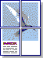

Follow the procedure below to print a single document page over multiple sheets to make a poster size print.
Depending on the printer you are using, this function may not be available.

1 Page into 4 Sheets
Note:
The enlargement ratio used is based on the specified paper size and the number of sheets you want to split the image over.
Prints are made with a 15 mm (0.6 inches) overlap margin. When pasting sheets together, overlap them to hide this margin.
Open the printing preferences dialog box after creating a document in an application.
Click the Imposition menu on the Detailed Settings tab.
Select the number of sheets you want to split the image over in the Poster: list.
After making any other necessary settings, click OK to close the printing preferences dialog box.
Start printing.